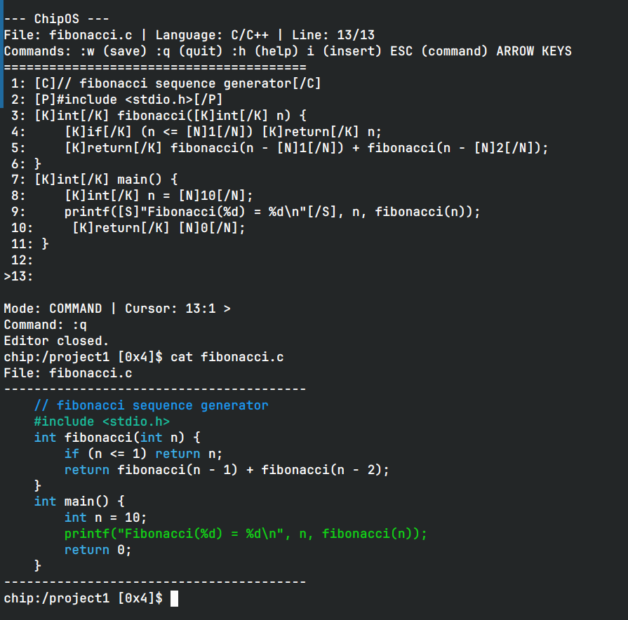
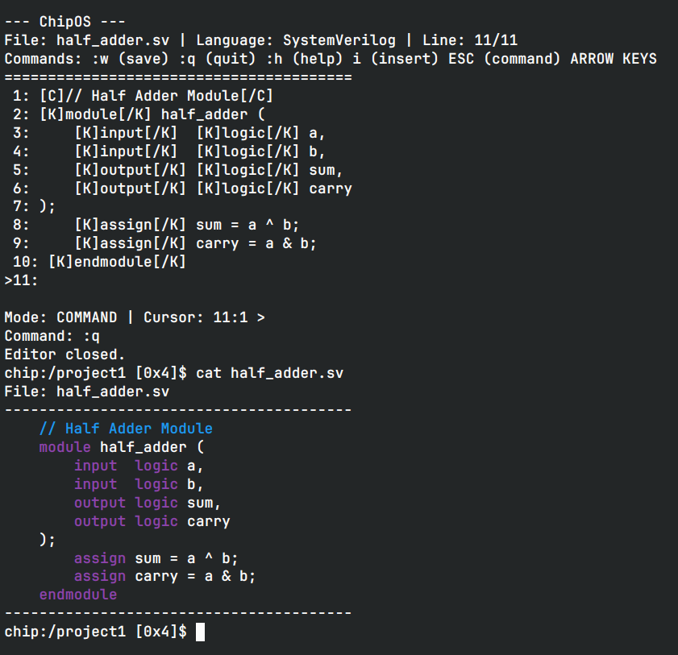
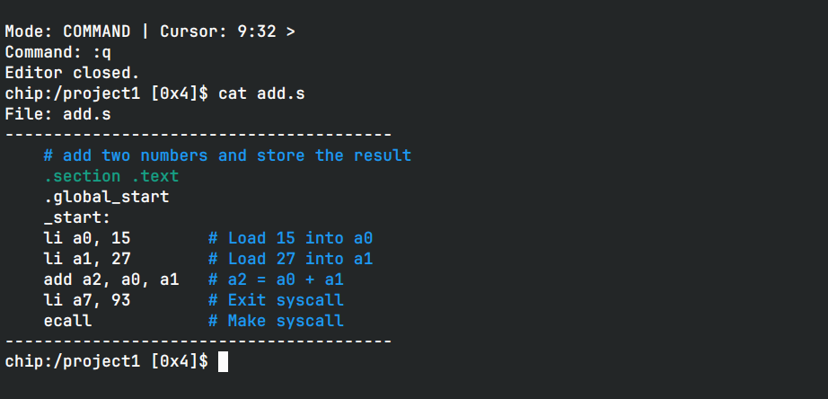
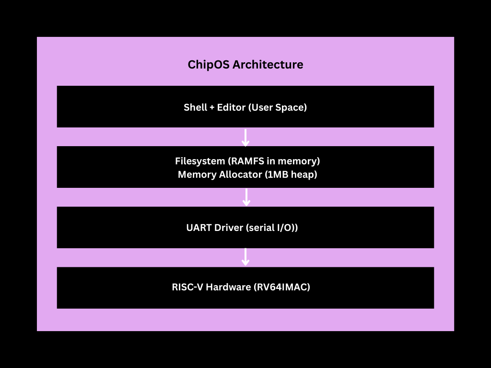
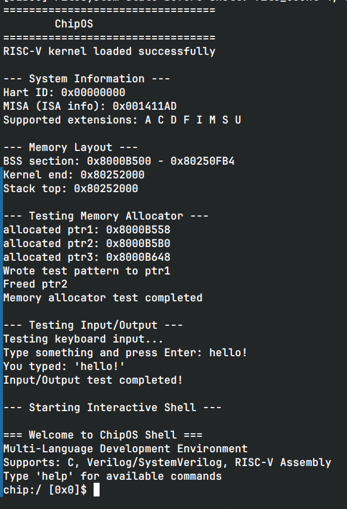
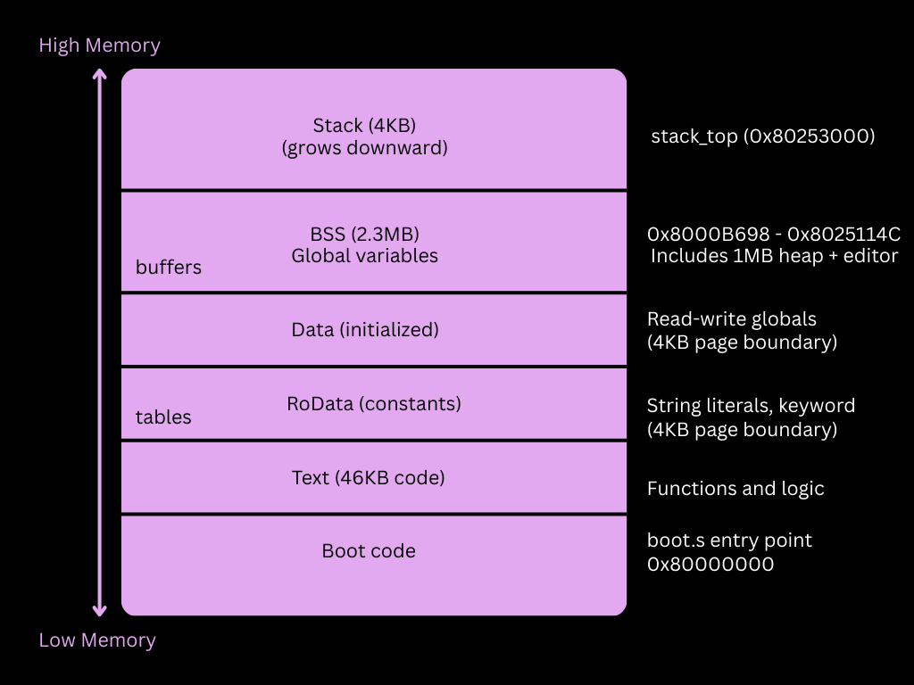
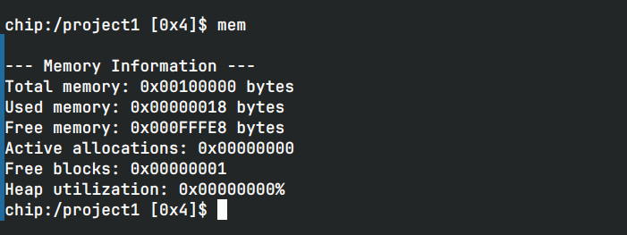

/chipos
November 2025 | C, RISC-V Assembly, Operating Systems | 15 min read
Most operating systems are millions of lines of code. Linux is over 30 million. Windows is similar. ChipOS is 3,500 lines, boots in 35 milliseconds, and includes a VIM-style text editor with syntax highlighting.
I built it from scratch to understand how operating systems actually work—by writing one for bare-metal RISC-V with no external dependencies.
What ChipOS Actually Is
ChipOS is a microkernel OS targeting hardware designers and embedded developers. It's a complete development environment that runs directly on RISC-V processors—no host OS required.
Core Features:
- Custom bootloader written in RISC-V assembly
- Memory allocator managing a 1MB heap
- UART driver for serial I/O via memory-mapped I/O
- Hierarchical filesystem stored entirely in RAM
- Two text editors: a basic line editor and a VIM-style modal editor
- Interactive shell with command history and syntax highlighting
- Support for C/C++, Verilog/SystemVerilog, and RISC-V assembly
The entire system—kernel, drivers, filesystem, editors, shell—compiles to a single 2MB binary that boots directly on QEMU or real RISC-V hardware.
The Editors and Syntax Highlighting
ChipOS includes two text editors because different tasks need different tools. The basic line editor (edit) is perfect for quick file edits—type your content, save with :w, done. But the real work happens in code, a VIM-style modal editor with full syntax highlighting.
The editor automatically detects language from file extensions and highlights keywords, comments, strings, and preprocessor directives. It works in both command mode (navigate with hjkl or arrow keys) and insert mode (type normally, ESC to return).
  The highlighter parses each line in real-time, checking for language-specific patterns and matching words against keyword tables. Since serial I/O at 9600 baud is the bottleneck anyway, the CPU overhead is negligible.
System Architecture
Everything is statically linked. The kernel, drivers, and user applications live in the same address space. There's no virtual memory, no process isolation, no privilege levels. This simplicity makes the system easier to understand and debug.
Boot Sequence
When you power on the system, execution starts at 0x80000000—the RISC-V reset vector. The bootloader sets up the stack pointer, zeros out uninitialized data, and jumps to the kernel.
The kernel initializes three things in order: the console (UART driver), memory (heap allocator), and filesystem (directory structure). Then it drops into the interactive shell. Total boot time: 35 milliseconds.
The first time I saw that boot sequence complete and the shell prompt appear, I just stared at it for a minute. Months of reading documentation, writing assembly, debugging memory corruption—and suddenly there was a working operating system responding to commands.
Memory Layout
ChipOS uses a flat memory model—physical addresses are the same as virtual addresses. The binary has three sections: text (executable code), data (constants), and BSS (uninitialized data).
The BSS section is 2.27 MB because it contains the 1MB heap for dynamic allocations, 1MB of filesystem storage, 256KB of editor buffers, and filesystem metadata. The actual executable code is only 45KB—the rest is data structures for runtime use.
The Filesystem
The filesystem is RAM-based—everything lives in memory, nothing persists across reboots. Files are stored in a flat array of 256 entries. Each entry has a name, type (file or directory), size, and a parent ID pointing to another entry in the array.
The root directory is entry 0 with parent 0 (itself). When you create /home/main.c, the system finds the entry for "home" and creates a new entry for "main.c" pointing to it as the parent. To build full paths, you walk up the parent chain until you hit root.
File contents live in a separate 1MB byte array, with each file storing an offset into that array. It's simple and works well for embedded targets that often lack persistent storage anyway.
The Memory Allocator
The heap allocator uses first-fit allocation—walk the linked list of memory blocks until you find one that's free and big enough, then split it if necessary. When you free a block, it immediately merges with adjacent free blocks to prevent fragmentation.
Each block has a small header storing its size, free status, and a pointer to the next block. The allocator manages a 1MB heap and handles typical allocations under 1KB efficiently. First-fit is simpler than best-fit and faster in practice for this use case.
The UART Driver
All I/O goes through a single UART at memory address 0x10000000. The driver does memory-mapped I/O—reading and writing bytes directly to hardware registers.
The system uses polling instead of interrupts. It spins waiting for the UART to be ready before sending or receiving characters. This works because ChipOS is single-threaded, the UART is the only I/O device, and human typing is slow enough for the CPU to keep up.
The UART controller is 16550-compatible—a classic design from the 1980s still used in embedded systems today.
What I Learned
I/O dominates performance. The UART runs at 9600 baud—orders of magnitude slower than the CPU. Serial I/O is the real bottleneck, not any algorithm optimization. Understanding where the actual constraints are changes how you think about performance.
Simplicity wins. First-fit allocation is straightforward and works well for this use case. Simple code is easier to debug and often faster in practice than theoretically optimal solutions with more complexity.
The standard library does more than you think. Implementing strcmp(), strlen(), and memcpy() from scratch gives you a new appreciation for edge cases and buffer management. These "simple" functions handle a lot of corner cases most people never think about.
Hardware constraints are real. RISC-V requires aligned memory access—unaligned pointers trigger faults immediately. There's no debugger safety net on bare metal. You learn to be careful because the hardware won't forgive mistakes.
Try It Yourself
ChipOS is open source and runs in QEMU. No special hardware needed.
# Install RISC-V toolchain
sudo apt install gcc-riscv64-linux-gnu qemu-system-misc
# Clone and build
git clone https://github.com/cigi10/chipos.git
cd chipos
make clean && make runTry these commands:
ls -l # List files
mkdir project # Create directory
cd project # Change directory
touch main.c # Create file
code main.c # Edit with syntax highlighting
cat main.c # View with colors
mem # Show memory usageThe editor supports C/C++, Verilog/SystemVerilog, and RISC-V Assembly with keyword highlighting, comment detection, and string parsing.
Final Thoughts
ChipOS boots in 35 milliseconds, runs in 2.3 MB of RAM, and provides a complete development environment for RISC-V. It's a working operating system you can run on real hardware or in an emulator.
If you're curious about operating systems, build one. Start with a bootloader, add a memory allocator, implement a filesystem, write a shell. You'll learn more in one weekend than from a semester of textbooks.
Read the code: github.com/cigi10/chipos
Technical details:
- Target: RISC-V RV64IMAC
- Toolchain: GNU GCC 15 for RISC-V
- Emulator: QEMU 9.1.0 (
qemu-system-riscv64) - Language: C11 + RISC-V assembly
- Build system: GNU Make
- Lines of code: ~3,500 (excluding comments)
- Tested on: QEMU virt machine (RISC-V 64-bit)